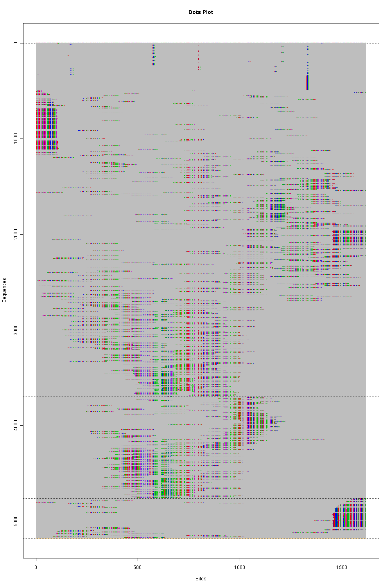
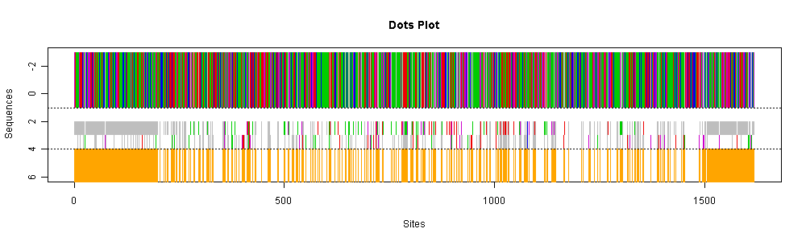

#### HIV -- Human Immunodeficiency Virus, an example of Next Generation Sequencing
This is an application to the Next Generation Sequencing which produces
large amount of short-read fragments. Also, this shows the capability of
Phyloclustering to deal with large data.
The data are available from the paper (contact author to obtain files)
- Eriksson N, Pachter L, Mitsuya Y, Rhee S-Y, Wang C, et al. (2008)
Viral Population Estimation Using Pyrosequencing.
PLoS Comput Biol 4(5): e1000074.
doi:10.1371/journal.pcbi.1000074.
This paper sequences HIV viruses collected from several patients participating
in a clinic trial study in order to determinate the escaping ability of HIV
virus.
Here, we focus on the patient "V11909".
The detail steps of this phyloclustering reanalysis are the following:
1. obtain alignment for each fragments to a reference sequence,
2. insert common gaps into the reference sequence and all fragments accordingly,
3. run <code>phyclust</code> to analyze the commonly aligned fragments containing
large number of gaps, and
4. plot the clustering results for the aligned fragments.
The data for <code>phyclust</code> have the size of
5177 fragments and each has 1617 bps after resembling the data.
We conservatively pick
$K = 3$
as the results and display in the figures
(click to enlarge.)
The colored dots represent four different nucleotides and
the gray areas are all gaps.
In the first figure,
we may say that
the first cluster is the major population
in this patient. Further, it possibly exists other two small populations.
In the second figure,
the three central sequences for each cluster are summarized
where we compare the second and third central sequences against the first
central sequence (top bar) and plot the mutation sites which are denoted
by the origin dots in the bottom.
<center>
<table>
<tbody>
<tr>
<td> <a href="./ex_hiv_dots.png"
target="_blank"></img></a></td>
<td> </img>
</tr>
</tbody>
</table>
</center>
---
<div w3-include-html="../preamble_tail_date.html"></div>